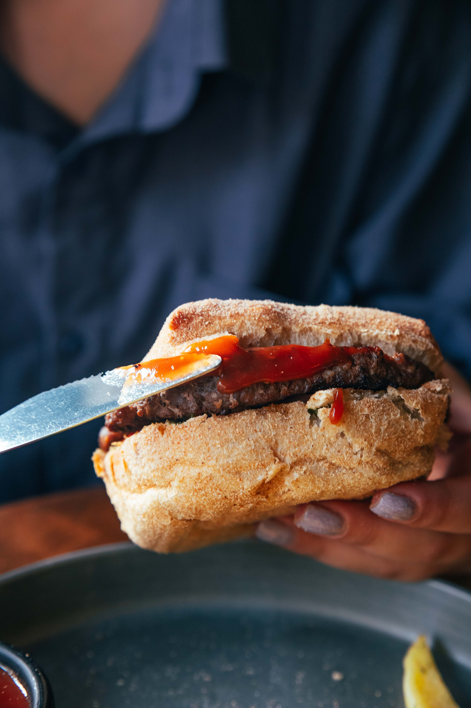
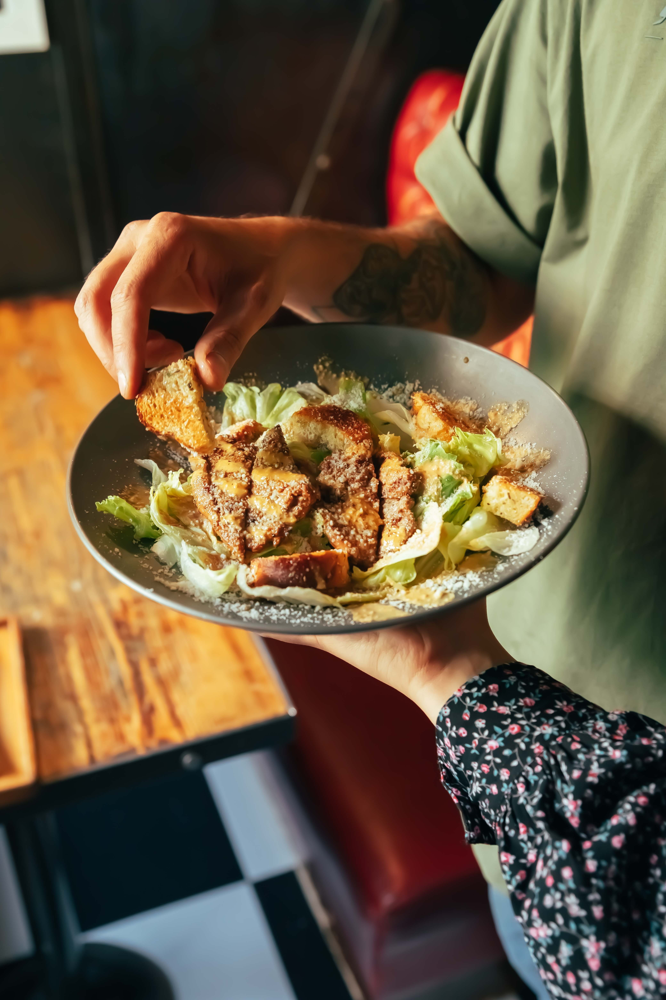
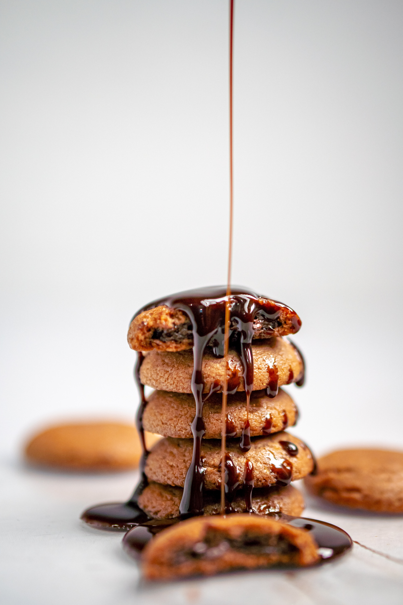
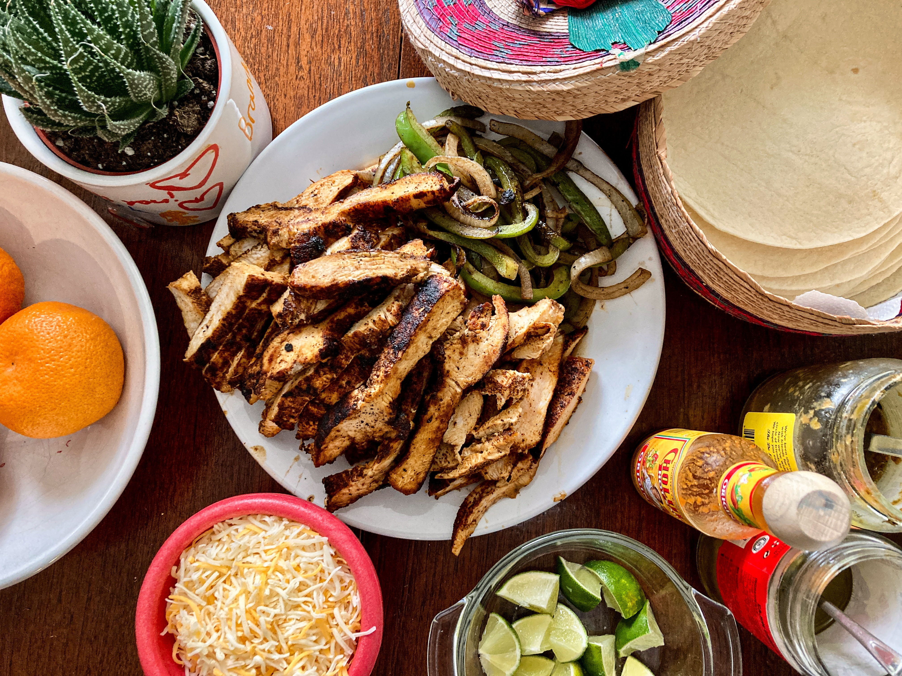

raw ingredients
cooking is better with raw ingredients. you will see higher quality in taste the less pre made it is

mushrooms
you can make mushrooms work in almost everything! as long as you incorparate it right.

Organic foods
organic foods are great for the enviroment and can be great for your stomach too.

non expensive options
you can find lots of food that are less expensive and lesss time consuming.

great desserts
there are many great desserts and there always comes new ones.

oldies but goldies
recepies mastered by chefs. from 5 star kitchen too your home.